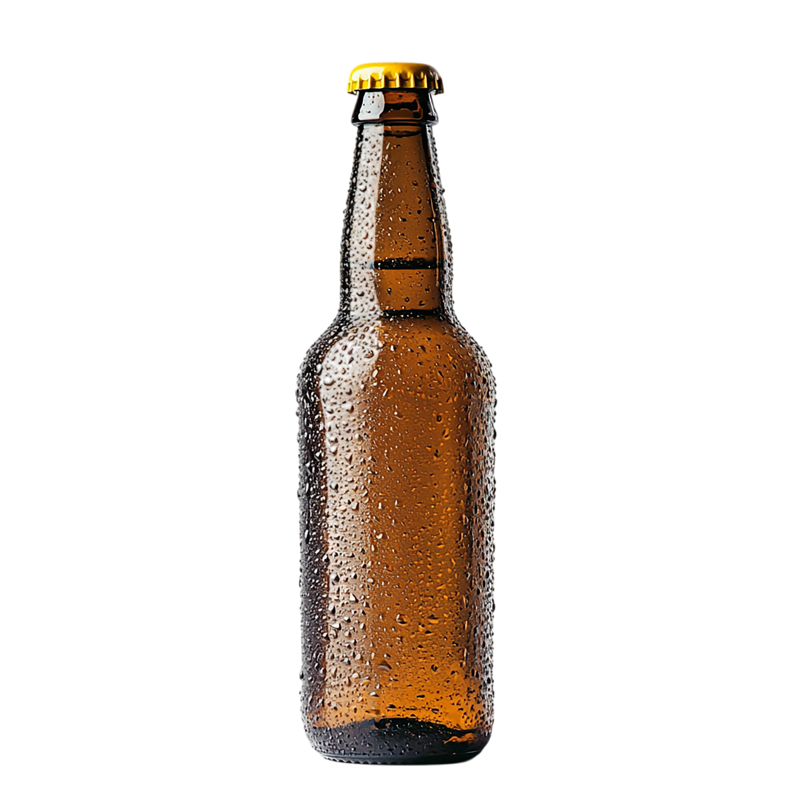

Rüştü'nün Alkol Takipçisi
~%5

Bira
(50cl Şişe)
~%40
Viski
(Duble - 6cl)
~%45
Rakı
(Duble - 6cl)
~%45
Zivania
(Shot - 3cl)
~%12
 Şarap
(Kadeh - 15cl)
Şarap
(Kadeh - 15cl)
Şarap
(Kadeh - 15cl)
~%40
Cin
(Duble - 6cl)
~%40
Votka
(Duble - 6cl)
Eklenen İçecekler
Toplam Alkol Miktarı: 0 gram